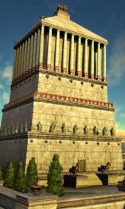

Галикарнасский мавзолей

Не только египетские фараоны заранее заботились о своих гробницах. Царь Мавсол, правитель города Галикарнас в Малой Азии, известный в истории лишь своей жадностью, решил сделать то же самое. Он приказал построить мавзолей, который должен был одновременно стать храмом, где Мавсолу воздавались бы божеские почести. Мавсол пригласил лучших архитекторов, и примерно в 360 году до нашей эры строительство началось. Сам Мавсол до его завершения не дожил, возведение мавзолея продолжила его вдова, царица Артемисия. Но и ей не удалось увидеть мавзолей построенным. Полностью усыпальница была закончена лишь при внуке Мавсола. Это было большое прямоугольное здание шириной 66 метров, длиной 77 и высотой 46 метров. Мраморные колонны и статуи, выложенные белым мрамором ступени, поднимающиеся в зал для жертвоприношений в честь царя… Историки и писатели древности единодушно описывали гробницу Мавсола как необыкновенно прекрасное сооружение.
Мавзолей простоял около 1800 лет, хотя частые землетрясения его изрядно повредили. Разрушили же чудо света окончательно не силы природы, а крестоносцы, захватившие в XV веке побережье Малой Азии. О великом творении древних ваятелей сегодня напоминают лишь плиты с античными барельефами да фрагменты статуй, хранящиеся в Британском музее, куда они были перевезены с раскопок.